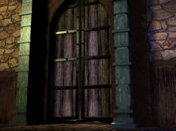
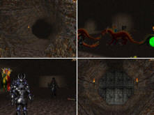
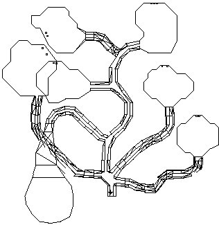

There really is not point to this dungeon except fighting.
This cave sure is the most curved and sloped of all. You find lots of Wyrms, Death and Doom Knights, and even more powerful Cuisinarts. Better be around level 60 or you will spend more time healing yourself then fighting. :)
You will find many nice items here, chain and plate armors, all kinds of weapons, rings and gold.
Leave us a message at: mgrounds@hotmail.com